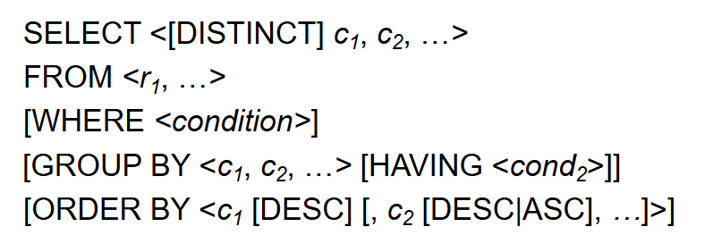
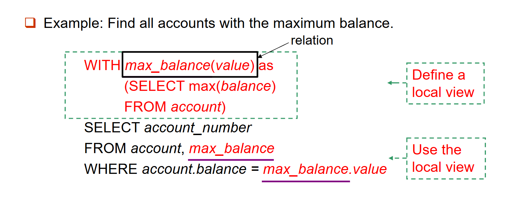
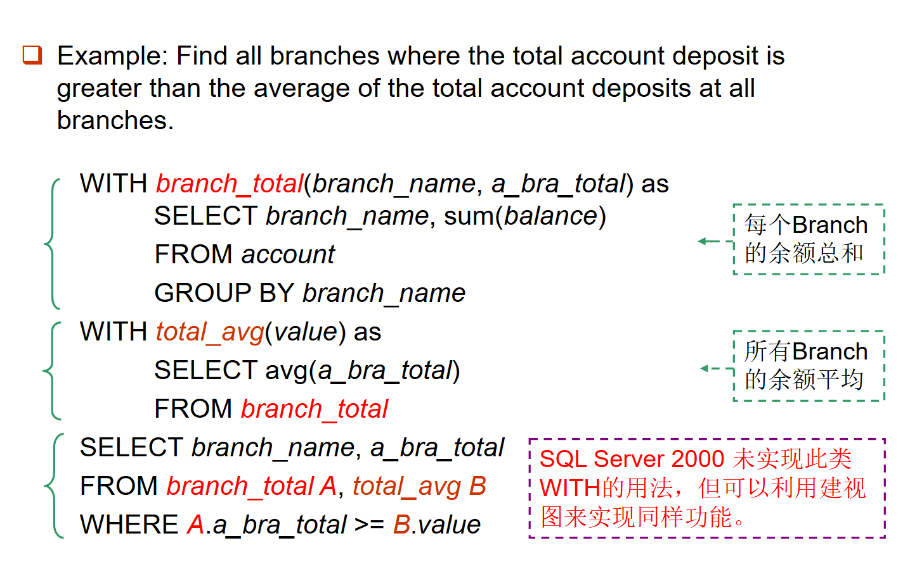
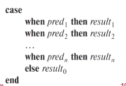
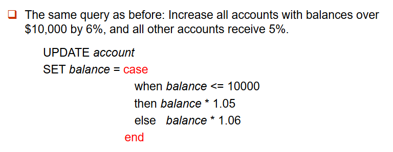

SQL 语言基础¶
数据定义语言（Data Definition Language，DDL）¶
SQL 数据定义语言（DDL）允许指定关于关系的信息
DDL 的主要功能包括：
- 定义每个关系的模式
- 定义与每个属性相关联的值的域
- 定义完整性约束
- 定义每个关系在磁盘上的物理存储结构
- 定义为每个关系维护的索引
- 定义关系上的视图
常见的 SQL 数据类型¶
char(n)：固定长度字符串，用户指定长度。varchar(n)：可变长度字符串，用户指定最大长度 \(n\) 。int：整数（依赖于机器的整数集的有限子集）。smallint：小整数（依赖于机器的整数域类型的子集）。numeric(p, d)：定点数，用户指定总精度为 \(p\) 位数字，其中小数点右边有 \(d\) 位数字。real、double precision：浮点数和双精度浮点数，精度依赖于机器。float(n)：浮点数，用户指定精度至少为 \(n\) 位数字。-
所有域类型都允许空值。将属性声明为
not null则禁止该属性取空值。 -
date：日期，包含（4位数字）年、月和日。- 例如：date '2007-2-27'
time：一天中的时间，包含小时、分钟和秒。- 例如：time '11:18:16'、time '11:18:16.28'
timestamp：日期加时间。- 例如：timestamp '2011-3-17 11:18:16.28'
关系定义¶
SQL 关系是通过 create table 命令定义的：
- \(r\) 是关系的名称
- 每个 \(A_i\) 是关系 \(r\) 的模式中的一个属性名
- \(D_i\) 是属性 \(A_i\)的域中值的数据类型

关系定义时的完整性约束包括：
not null：属性不能为空值。primary key（\(A_1, ..., A_n\)）:定义主键。check (P)：定义属性值的约束，其中\(P\) 是一个谓词- 从 SQL_92 开始，属性上的主键声明自动确保非空，在 SQL_89 中需要显式声明

关系的删除和修改¶
drop table 命令会从数据库中删除有关被删除关系的所有信息。
格式：DROP TABLE 关系名;
与
delete from r有差别，drop table命令会删除整个关系，而delete from r仅删除表格中的数据。
alter table 命令也可以用于删除关系的属性
格式为：ALTER TABLE r DROP A。其中 \(A\) 是关系 \(r\) 中的一个属性名
请注意，许多数据库不支持删除属性。
alter table 命令也可以用于修改关系的属性
例如：ALTER TABLE branch MODIFY (branch_name char(30), assets not null)
索引的创建和删除¶
创建索引：CREATE INDEX <索引名> ON <表名> (<属性列表>);
create index b_index on branch (branch_name);
create index cust_strt_city_index on customer (customer_city, customer_street);
指定一个候选键：CREATE UNIQUE INDEX <索引名> ON <表名> (<属性列表>)
删除索引：DROP INDEX <索引名>;
基本结构¶
一个典型的 SQL 查询具有如下形式：
其中 \(A_i\) 是属性，\(r_i\) 是关系，\(P\) 是谓词。该查询等价于下面的关系代数表达式
SQL 查询的结果是一个关系。
SELECT 子句¶
select 子句列出查询结果中想要的属性。对应于关系代数中的投影操作。
例如：查找 loan 关系中所有分支的名称。
对应关系代数：\(\Pi_{branch\_name}(loan)\)
注意：SQL 不允许在名称中使用
-字符，因此在实际实现中使用branch_name而不是branch-name。注意：SQL 名称不区分大小写，即可以使用大写或小写字母。（
SELECT age FROM student和SELECT AGE FROM STUDENT等价）
SQL 允许关系和查询结果中存在重复值。若要强制消除重复，在 select 后插入关键字 distinct即可。
例如：查找 loan 关系中的所有分支机构名称，并去除重复值
与之相反的关键字all则允许重复，例如：
默认情况下，允许重复，即默认使用 all。
select 子句中的星号 * 表示所有属性。
select 子句可以包含涉及运算符 +、-、* 和 / 的算术表达式，这些表达式可以对常量或元组的属性进行操作。
一个属性可以是一个字面量，不带 from子句。如： select '437'，结果是一个表，包含一列和一行，值为“437”。
可以使用以下方式给该列命名：select '437' as FOO
也可以带 from子句。如：select 'A' from instructor，结果是一个表，包含一列和 \(N\) 行（即 instructor 表中的元组数），每行的值为\(A\)。
WHERE 子句¶
WHERE 子句指定结果必须满足的条件。
例如：查找在 Perryridge 支行发放的、贷款金额大于 1200 美元的所有贷款编号。
对应 SQL 查询：
在 WHERE 子句中，比较结果可以使用逻辑连接词 AND、OR 和 NOT 进行组合，也可以使用 BETWEEN 比较运算符来指定一个范围。
例如：查找贷款金额在 90,000 美元到 100,000 美元之间（即 ≥ 90,000 美元且 ≤ 100,000 美元）的贷款编号。
行构造器：\((V_1, V_2, \dots, V_n)\) 表示一个包含值$ V_1, V_2, \dots, V_n$ 的 \(n\) 元元组。
select name, course_id
from instructor, teaches
where instructor.ID = teaches.ID and dept_name = 'Biology';
select name, course_id
from instructor, teaches
where (instructor.ID, dept_name) = (teaches.ID, 'Biology');
某些 SQL 实现（例如 Oracle）不支持这种语法。
FROM 子句¶
FROM 子句列出查询中涉及的关系。
如果在 FROM 子句中指定了多个关系，则对应于关系代数中的笛卡尔积操作。
例如查找笛卡尔积\(borrower × loan\)

重命名操作¶
元组变量在 FROM 子句中通过使用 as子句来定义。（相关名称、表别名、相关变量）
示例：找出银行所有客户的客户姓名、他们的贷款编号和贷款金额。
SELECT customer_name, T.loan_number, S.amount
FROM borrower as T, loan as S
WHERE T.loan_number = S.loan_number
字符串操作¶
SQL 通过将字符串括在单引号中来指定字符串。
在SQL标准中字符串是大小写敏感的，但是在实际系统中不一定。
SQL 包含一个用于字符串比较的字符串匹配操作符。like 操作符的使用与两个特殊字符（通配符）有关：
%匹配任意子串（类似于文件系统中的*）_匹配任意单个字符（类似于文件系统中的?）
这两个通配符的使用可以实现模糊匹配（放在 WHERE 子句中，并且必须与 LIKE 操作结合使用）。

对于包含特殊字符（即 % 和 _）的字符串，SQL 允许指定一个转义字符。
转义字符通过 escape 关键字在 like 比较中定义。
匹配名字“Main%”：LIKE 'Main\%' escape '\'
匹配名字“ab\cd%”：LIKE 'ab\\cd\%' escape '\'
SQL 允许我们使用 not like 比较运算符来搜索不匹配的内容，而非匹配的内容。
SQL支持字符串之间连接（使用||），例如：
输出为：
SQL还支持许多其他的字符串操作，包括：
- 使用函数 lower( ) 和 upper( ) 进行大小写转换（以及反向转换）
- 获取字符串长度
- 提取子串
- 使用 trim( ) 去除字符串末尾的空格
元组排序¶
order by 子句可以对查询结果进行排序。
我们可以指定 desc 表示降序，或 asc 表示升序，对于每个属性，升序是默认值。
排序可以在多个属性上进行
例如：

重复¶
在传统关系理论中，不存在重复，但在实践中我们需要重复。
某些关系代数运算符的多重集版本，包括 \(\sigma_\theta\)、\(\Pi_A\)、\(\times\)，它们支持多重集。
给定多重集关系 \(r_1\) 和 \(r_2\):
-
\(\sigma_\theta(r_1)\)：如果元组 \(t_1\) 在 \(r_1\)中有 \(c_1\) 个副本，并且 \(t_1\) 满足选择条件 \(\sigma_\theta\)，那么在 \(\sigma_\theta(r_1)\) 中就有 \(c_1\) 个 \(t_1\) 的副本。
-
\(\Pi_A(r_1)\)：对于 \(r_1\) 中元组 \(t_1\) 的每一个副本，在 \(\Pi_A(r_1)\) 中就有一个元组 \(\Pi_A(t_1)\) 的副本，其中 \(\Pi_A(t_1)\) 表示对单个元组 \(t_1\) 的投影。
-
\(r_1 \times r_2\)：如果元组 \(t_1\)在 \(r_1\) 中有 \(c_1\) 个副本，元组 \(t_2\) 在 \(r_2\)中有 \(c_2\) 个副本，那么在\(r_1 \times r_2\)中就有\(c_1 \times c_2\)个元组 \(t_1.t_2\) 的副本。

SQL 中的 select 语句也支持多重集运算符，包括 \(\sigma_{\theta} 、 \Pi_{A} 、 \times\)。禁止重复就在SELECT 子句中使用 distinct 关键字。
集合操作¶
在 SQL 中，使用集合操作包括 UNION、INTERSECT 和 EXCEPT，它们对关系进行操作，并对应于关系代数运算 \(\cup\)、\(\cap\) 和 \(-\)。
UNION、INTERSECT 和 EXCEPT每个操作都会自动消除重复。
若要保留所有重复，我们可以使用相应的多重集版本，包括 UNION ALL、INTERSECT ALL 和 EXCEPT ALL。
假设一个元组在 \(r\) 中出现 \(m\) 次，在 \(s\) 中出现 \(n\) 次，那么它在以下操作结果中出现的次数为： - 在 \(r \, \text{UNION ALL} \, s\) 中出现 \(m + n\) 次 - 在 \(r \, \text{INTERSECT ALL} \, s\) 中出现 \(\min(m, n)\) 次 - 在 \(r \, \text{EXCEPT ALL} \, s\) 中出现 \(\max(0, m - n)\) 次

注意：
- Oracle 使用 UNION、UNION ALL、INTERSECT 和 MINUS（代替EXCEPT）；但不支持 INTERSECT ALL 和 MINUS ALL。
- SQL Server 2000 仅支持 UNION 和 UNION ALL。
聚合函数¶
聚合函数对关系列的多重集值进行操作，并返回一个值。
常见的聚合函数包括：
avg(col)：平均值min(col)：最小值max(col)：最大值sum(col)：总和count(col)：计数
示例：查找 Perryridge 支行的平均账户余额。
上述编写方法大概率会报错，当select 子句中出现聚合函数之外的属性时，这个属性必须出现在 group by 列表中。
SELECT branch_name, avg(balance) avg_bal
FROM account
WHERE branch_name = 'Perryridge'
GROUP BY branch_name
如果不用 group by 子句，我们可以写成以下形式：
group by 子句可以对分组进行聚合，而不仅仅是对所有元组进行聚合。

聚合函数count()中同样能用distinct关键字消除重复计算。count(*)表示计算所有元组的个数，此时distinct关键字无效。

HAVING子句用于过滤聚合函数的结果。HAVING子句的语法与WHERE子句类似，但WHERE子句作用于单条元组，而HAVING子句作用于多个元组形成的group，常与GROUP BY子句一起使用。两者不能混用！

SELECT 语句及其子句总结¶
SELECT 语句的形式如下：

SELECT 语句的执行顺序是：From → where → group (aggregate) → having → select → distinct → order by
空值（NULL）¶
Null 是SQL中使用的一种特殊标记，其含义是“缺失的信息”或“不适用的信息”，即值未知或值不存在。
任何涉及 null 的算术表达式的结果均为 null。
例如：5 + null 返回 null。
与 null 进行的任何比较均返回 unknown（除 true 和 false 之外的第三种逻辑值 ）
例如：5 < null、null <> null 或 null = null
以下是三值逻辑：
- OR：
unknown or true = trueunknown or false = unknownunknown or unknown = unknown
- AND：
unknown and true = unknownunknown and false = falseunknown and unknown = unknown
- NOT：
not true = falsenot false = truenot unknown = unknown
若 where 子句谓词的结果为 unknown，则将其视为 false。
谓词 is null 和 is not null 可用于检查空值。（不能使用= null。
unknown，则 P is unknown的值为 true。
除 count(*) 之外的所有聚合操作都会忽略被聚合属性上取空值的元组。如：计算所有贷款金额的总和
上述语句会忽略 amount 为空的记录，若不存在非空的 amount 值，即 loan 表中所有 amount 值均为空，则结果返回空值。
嵌套查询¶
SQL 提供了一种子查询嵌套机制，子查询即是嵌套在另一个查询内部的select_from_where表达式。
嵌套可以在以下 SQL 查询的各个部分中实现：
- From 子句：\(r_i\) 可被任意合法的子查询替换。
- Where 子句：\(P\) 可被如下形式的表达式替换：\(B <\text{操作符}> \text{(子查询)}\)。其中 \(B\) 是一个属性，\(<\text{操作符}>\) 将在后续定义。
- Select 子句：\(A_i\)可被一个生成单个值的子查询替换。
子查询的一个常见用途是通过在 where 子句中嵌套子查询来执行集合成员资格测试、进行集合比较以及确定集合基数。
集合成员资格测试¶
in连接词用于测试集合成员资格，其中的集合是由 select 子句产生的一组值。not in 连接词用于测试是否不属于集合。
示例：查找在银行同时拥有账户和贷款的所有客户。
SELECT distinct customer_name
FROM borrower
WHERE customer_name in (SELECT customer_name FROM depositor)
集合比较¶
集合之间比较的运算符有
-
some
<some, <= some, >= some, = some, 和 <> some- 例如：
> some表示大于至少一个
-
all
<all, <= all, >= all, = all, 和 <> all- 例如：
> all表示大于所有


集合基数确定¶
SQL 包含一项用于测试子查询结果中是否存在元组的功能：exists, not exists
exists r: (1)r ≠ ∅: TRUE(2)r = ∅: FALSEnot exists r: (1)r ≠ ∅: FALSE(2)r = ∅: TRUE


unique和not unique构造用于测试子查询的结果中是否存在重复元组。
- unique r: (1) r 中没有重复元组: TRUE (2) r 中有重复元组: FALSE
- not unique r: (1) r 中没有重复元组: FALSE (2) r 中有重复元组: TRUE

子查询的限制¶
-
在
from子句中嵌套的子查询不能使用同一from子句中其他关系的关联变量。 -
自 SQL 2003 起，SQL 标准允许在
from子句中使用带有lateral关键字的子查询，以访问同一from子句中位于其之前的表或子查询的属性。

WITH 子句¶
with子句提供了一种定义临时关系的方式，该临时关系的定义仅对其所在的查询可用。


标量子查询¶
子查询仅返回包含单个属性的一个元组；这类子查询称为标量子查询。

数据库修改¶
删除数据¶

要区分delete和drop语句。delete语句的作用是删除表格中的元组，而drop可以删除整个表格本身。
注意：删除命令仅作用于单个关系，如果我们想从多个关系中删除元组，必须为每个关系使用一个删除命令。

插入数据¶
INSERT INTO table_name (column1, column2,...)
VALUES (value1, value2, ...);
INSERT INTO table_name(column1, column2,...)
SELECT expression1, expression2...
FROM ...
如果插入的元组仅对模式中的部分属性赋值，则其余属性将被设置为 null 值。

我们可以根据查询结果插入元组。

由于“select from where” 语句在将其任何结果插入到关系之前会被完整求值，所以可以支持一些看似矛盾的操作。

更新数据¶

在多种情况的更新中，我们可以用case语句来实现更复杂的更新。

则上例可以被修改为：
